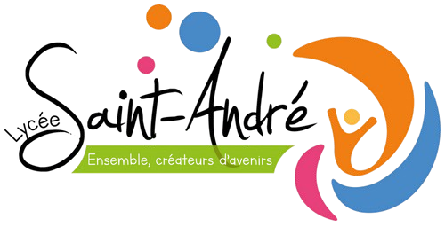
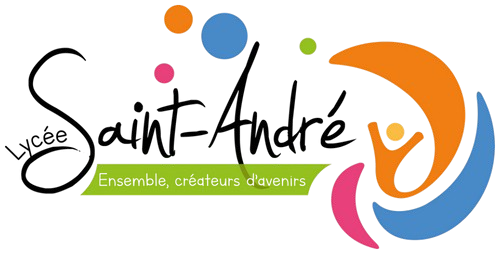

Stage CERFRANCE Poitou-Charentes
- BENOIT Nathaël
.
- Tuteur : PICARD Mathieu
.
- Responsable : ROSSIGNOL Arnaud
Association de Conseil & Expertise comptable.
680 collaborateurs
Poste : Administrateur système et réseaux
Activités Réalisés
Pendant mon stage au CERFRANCE Poitou-Charentes, j'ai eu l'opportunité de participer à diverses activités et projets. J'ai commencé
par réinitialiser 104 téléphones en autonomie, une tâche que j'ai terminée en deux à trois jours. Ensuite, j'ai aidé à la réception, au scan
et au rangement de 465 ordinateurs portables, en collaboration avec l'apprenti et un nouvel arrivant. J'ai également observé la création
de sites web avec l'ancien informaticien qui s'occupait de ça, David LECORNE, et tenté de créer mon propre site web. De plus, j'ai utilisé
le logiciel Acronis pour réinitialiser des ordinateurs. Enfin, j'ai accompagné Michaël BRITEAU pour améliorer et nettoyer l'ordinateur d'un
client et démonté des disques durs HDD pour en comprendre la composition. De plus, plusieurs fois dans la semaine je me suis retrouvé dans la
salle de réunion avec tous les professionnels qui discutaient de l'avancée des projets et de leurs problèmes rencontrés.
Compétences Acquises
Durant ce stage, j'ai acquis plusieurs compétences techniques et interpersonnelles. J'ai appris à réinitialiser des téléphones et des
ordinateurs, et à utiliser des logiciels de sauvegarde et de restauration de données comme Acronis. J'ai également été initié à la
création de sites web. Sur le plan interpersonnel, j'ai compris l'importance de communiquer de manière claire et non technique avec les
salariés qui ne sont pas dans le domaine mais aussi l'importance du travail en équipe et de respecter les procédures. J'ai aussi appris
à m'organiser et à gérer mon temps efficacement pour respecter les plannings.
Difficultés Rencontrées
J'ai rencontré plusieurs difficultés au cours de mon stage. La timidité due à la jeunesse et à la première expérience professionnelle
m'a dérangé sur le fait de demander des explications et de l'aide lors de tâches compliquées.
 
